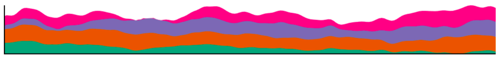

Project 1: Visualizing time series data
Project 1 is due at 11:59pm Sunday, 2/17.
This project is 26% of your final grade:
16% for design and implementation.
5% for project report on Github.
5% for in-class presentation.
Project Description:
Project 1 is an individual project.
Every student needs to practice with writing an application in javascript and D3, making report on Github, and present his/her visualization in class.
In this project, student will work on the time series data of student's choice. For example, the US employment data is available on Bureau of Labor and Statistics. Data description can be found on the website. In this particular example, we will focus on employment rate by state.
Besides the numerical data, the input data can have other formats, such as geo-locations, text, images, audios, and videos.
For a C, you will need to:
- Collect the data from BLS website. Some pre-processing might be needed to obtain unemployment rate.
- Set up an Github account to share source code and project report to instructor and TA
- Allow users to select a state and display its unemployment rate in the graph.
- Allow user to add more than one states (to compare) or all states into the graph.
- Graph labels are available and easy to read.
For a B, you will need to add:
- Display and compare to the national unemployment rate on request.
- Allow state selection from a US map.
- Highlight a state on the map when mousing over a time series.
- Your visualization should be responsive.
- Allow users to quickly zoom into a time interval.
For an A, you will need to add:
- Compare unemployment rates of different years and states.
- Compare unemployment rate to other variables (that you think it is useful) on BLS website or other resources.
- Find some interesting events in the data and highlight them on your webpage through screen snapshots.
For extra credits, you may want to:
- Plot a time series with requested features on the graph, such as a sudden drop or pump.
Please find these features in my paper. Explain the stories behind these features.
- Cluster time series by raw data or by its features using a basic clustering algorithm such as K-means.
- Predict state/national unemployment rate in 2017.
The following images are from "Graphical Perception of Multiple Time Series" paper, avaialble here.
You should:
- Understand the pros and cons of each time series visualization technique.
- Select the right technique for your data.
Line graph
 Small multiples
Small multiples

Stacked graph
Braided graph
 Horizon graph: D3 Horizon Charts implementation
Horizon graph: D3 Horizon Charts implementation
Other resourses/applications for time series:
- D3 Show Reel
- Baby name voyager
- A Visual Backchannel for Large-Scale Events by Marian Dörk, infoVis 2010
paper and video
- Visualizing Time Series Data: 7 Types of Temporal Visualizations
Notes:
This project is a web-based application in javascript, html, and D3.
Your code should run on all browsers (Chrome, Safari, Firefox, Explorer,...). You should test it in the classroom before your presentation to avoid issues, such as different versions of web browsers, screen resolutions, usage of classroom devices. Remember that you only have 5 minutes.
Your application should start out showing some data or an overview and then allow users to add more or request details on demand. Do not start with an empty screen and do not overwhelm viewers by showing a lot of the data right away.
Do not write the application at the last minute to avoid mistakes. Make sure that your code runs and that you have enough time to design intuitive interfaces.
Make sure your code is well commented (this is a good practice). Instructor may inspect your source code.
Project report on Github (readme file):
Create a 3-minute video showing the use of your application with your voice over. That video should appear on the top of your github readme file. On Mac, you can use screen-capture of QuickTime Player while interacting with your application. Voice could be recorded together or separately.
The video is a good way to show your interactive application in a short amount of time. If you submit a paper to a visualization conference, a video is very useful. It can be also a backup during your presentation just in case of something go wrong.
Add a link to your web-based application (right after the video). You can host it on your github, your ttu personal page, or somewhere.
Add data description: how you processed the data or where you got it from.
Your findings (interesting things you found about the data using your visualization). You can add some screenshots here.
An example github report can be found here.
In-class presentation:
By 11:59pm Sunday 2/17, you will need to send the TA (not the instructor) your name, a nice 1920 x 512 gif image of your visualization (the image should be named p1.<your_last_name>.<your_first_name>.gif), your github link, and your web application link. The TA will make an html table with all of your projects.
The presentation is 5 minutes per student (and that is firm). It is 4 minute talk and 1 minute for questions. Make sure that you are ready to talk right after your friend (in front of you) is done.
Please practice your talk. Show the basic functionality and emphasize on why your visualization is different.
Data:
By 11:59pm Thursday 1/14, you will need to send the Huyen.Nguyen@ttu.edu (not the instructor)
https://www.data.gov/
https://dataverse.org/
http://www.realclimate.org/index.php/data-sources/
Climate Station Records: https://www.metoffice.gov.uk/research/climate/climate-monitoring/land-and-atmosphere/surface-station-records
https://www.cdc.gov/nchs/tools/index.htm
https://datacatalog.worldbank.org/
https://www.acleddata.com/
https://www.start.umd.edu/gtd/
https://www.prio.org/Data/Armed-Conflict/UCDP-PRIO/
UCI: https://archive.ics.uci.edu/ml/datasets.html?format=&task=&att=&area=&numAtt=&numIns=&type=ts&sort=nameUp&view=table
UFO reports: http://www.nuforc.org/
https://www.last.fm/charts
https://aqs.epa.gov/aqsweb/airdata/download_files.html
Stock data
Google data
videos:
https://www.ted.com/talks/gary_flake_is_pivot_a_turning_point_for_web_exploration
"Visual Analytics is the science of analytical reasoning facilitated by interactive visual interfaces. People use visual analytics tools and techniques to synthesize information and derive insight from massive, dynamic, ambiguous, and often conflicting data, provide timely, defensible, and understandable assessments; and communicate assessment effectively for action. The overall goal is to detect the expected and discover the unexpected. "
© Last revised: Jan 22, 2019